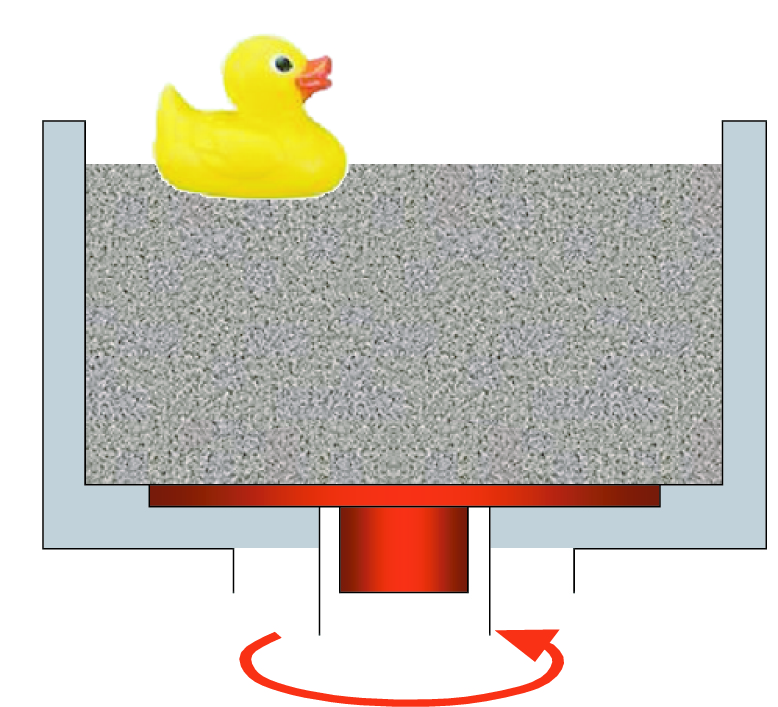
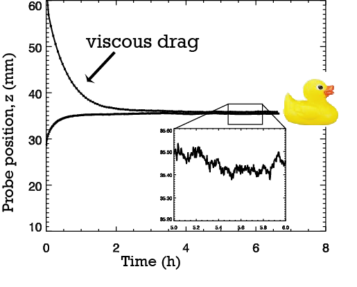
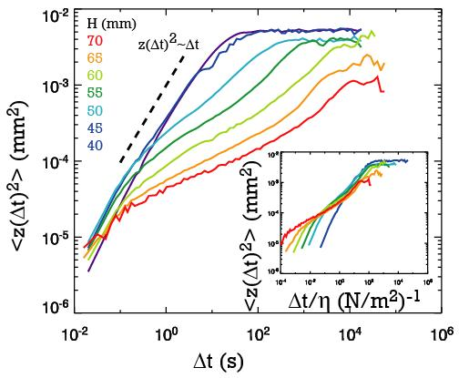

Fluidization and fluctuations in a liquid made of glass beads
Using the tools and techniques of statistical mechanics to describe the behaviour of systems made of many particles.
|
Granular materials are systems made of large numbers of small, hard particles. Just
like regular molecular matter, granular matter can exist in different phases: sand
flows in an hour glass, but forms a solid heap at the bottom of the container. The collective behaviour of granular systems
is often hard to predict: when will a rock slide happen on a stable scree slope?
Statistical mechanics is the branch of physics which
describes the collective behaviour of systems
made of many particles. It is often possible to describe how two particles interact,
but solving these equations for huge numbers of particles is not possible, even with
computers. Moreover, an understanding of how two particles interact does not always
give us insight into the behaviour of a many-particle system. Stat mech gives us
another set of tools to describe the collective behaviour of large numbers of particles.
|
| In the Complex Media group at Leiden University, shear is used to create a liquid made from glass beads. A spinning disk rotates in the bottom of the container. The grains next to the disk flow as the disk rotates, but only a few cm from the disk there is very little flow. The grains there jiggle and rearrange. |  |
|  |
The sheared granular liquid turns out to be surprisingly similar to a real molecular liquid.
The grains behave according to Archimedes' rule: an object more dense than the grains and the interstitial air will sink, while a less dense
object will float.
An object sinking in the fluidized grains will also experience a force much like viscous drag. The viscosity halves when the speed of the rotating disk doubles. |
| Notice how the position of the floating probe fluctuates instead of remaining constant? My collaborators and I wondered if this jiggling motion was analagous to Brownian motion. In Brownian motion, a microscopic particle (originally a piece of pollen) collides with water molecules. The water molecules themselves aren't visible under a microscope, but the tiny fluctuations of the pollen particle are. The mean square displacement (<z2(t) >) of the pollen is proportional to the temperature of the water. Could we use the fluctuations of our floating probe to measure the temperature of our "granular liquid"? |
|  | Here's the mean square displacement
as a function of the time interval over which the the displacement is measured. In an
ideal gas or liquid, the mean square displacement is proportional to time. But in a
sheared granular liquid, this is not the case. Adding grains to the container
(and increasing the height (H) of the grains) suppresses the fluctuations!
Notice the plateau in the mean square displacements at large times? This plateau is characteristic of glassy systems, where particles are trapped between neighbouring particles on long time scales. Meanwhile, on short time and length scales, the particles don't see that they have neighbours, so they behave more like the random-walking particles in a proper gas or liquid. |